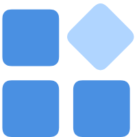
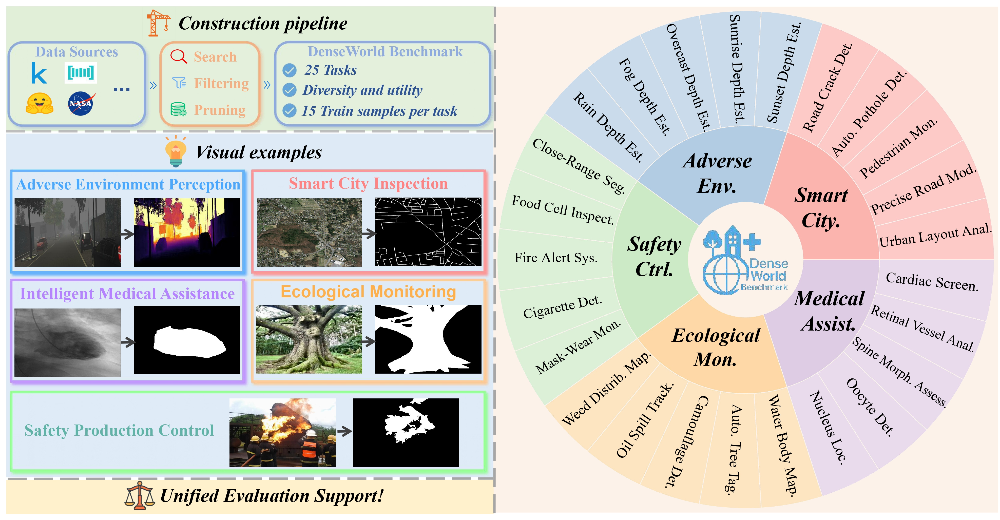
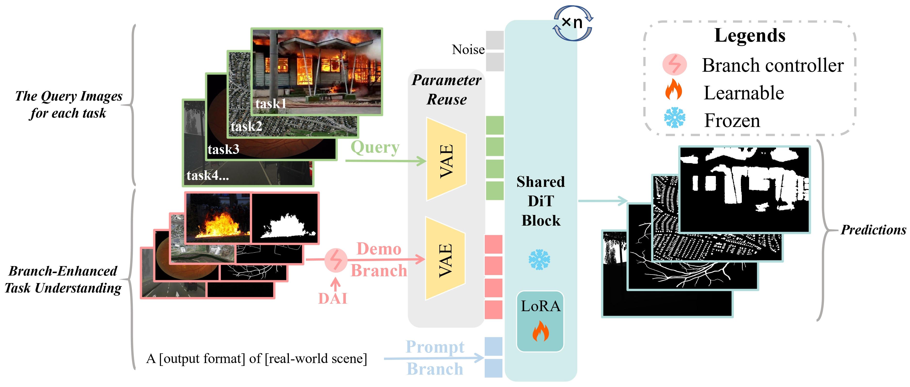

Demo1: Depth Estimation in Foggy Scenes
Demo2: Automated Tree Tagging
Demo3: Instant Fire Alert
Demo4: High-Precision Road Network Modeling
Demo5: Nucleus Localization

Dense prediction tasks hold significant importance of computer vision, aiming to learn pixel-wise annotated label for an input image. Despite advances in this field, existing methods primarily focus on idealized conditions, with limited generalization to real-world scenarios and facing the challenging scarcity of real-world data. We aim to expand dense prediction to a broader range of practical real-world scenarios while reducing the reliance on large-scale data under limited supervision. To systematically study this problem, we first introduce DenseWorld, a benchmark spanning a broad set of 25 dense prediction tasks that correspond to urgent real-world applications, featuring unified evaluation across tasks. Then, we propose DenseDiT, which maximally exploits generative models' visual priors to perform diverse real-world dense prediction tasks through a unified strategy. DenseDiT combines a parameter-reuse mechanism and two lightweight branches that adaptively integrate multi-scale context, working with less than 0.1% additional parameters. Evaluations on DenseWorld reveal significant performance drops in existing general and specialized baselines, highlighting their limited real-world generalization. In contrast, DenseDiT achieves superior results using less than 0.01% training data of baselines, underscoring its practical value for real-world deployment.


Thanks to FLUX.1-dev for their powerful model, IC-LoRA for discovering the in-context capability of FLUX, and OminiControl for their wonderful open-sourced work.